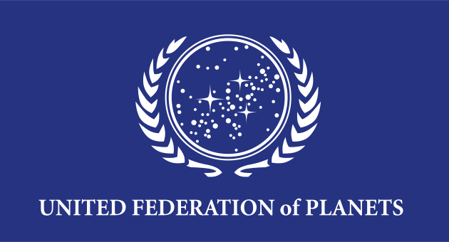
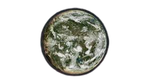

Ferenginar
Ferenginar, also known as the Ferengi homeworld, was an inhabited planet in the Ferenginar system of the Alpha Quadrant. This was the homeworld of the Ferengi, a warp-capable humanoid species. It was the capital planet of the Ferengi Alliance. The planet was best known for having nearly constant, planet-wide torrential rains, rotting vegetation, and rivers of muck. For those that want to know more

Location
Ferenginar was surrounded by star systems, including Clarus and Irtok. Ferenginar was located approximately fifty-five light years from Cardassia Prime and Starbase 375, and sixty light years from Bajor.